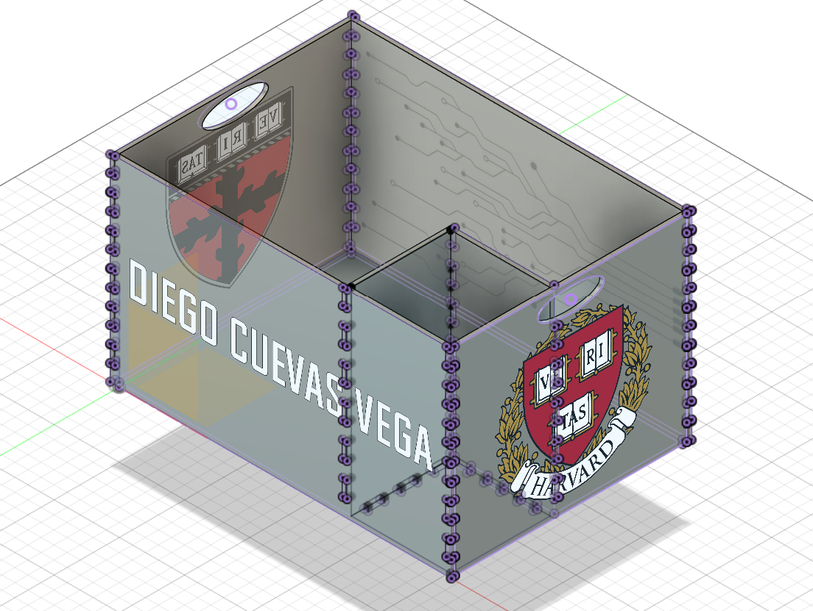

<div class="textcontainer">
<p class="margin"> </p>
<h3>Week 2: 2D Design & Cutting</h3>
<h4>Assignment: Make a Box</h4>
<h5>This assignment gave me insights into the inherent back and forth of every engineering design process.
Firstly, for my design I wanted a box that could have a smaller box inside of it so I could either store smaller objects
or simply have different compartments for when I need to store 2 things separately. Therefore, I designed this in
Fusion 360.
</h5>

<h5>However, when I tried to extract the planes of each face, there were 2 main problems:</h5>
<h5>1. When I went to the laser cutter I could not quite integrate all their dxf files into a single one.
Since each piece had it's own sketch, and thus dxf files. they werem't. I could have make them coincide,
but when I tried that I realized that my design did not fit within the laser cut limits so it wouldn't be useful regardless.
Furthermore, some faces did not allow me to properly explode and trim them as necesary.
Nevertheless, I did print one piece of the box to see how it would look like and wether my sketch conveyed what
I wanted to fabricate. Here is the image of said piece:
</h5>
<br></br>
<h5>2. The second problem was that I had not properly used all pertinent parameters: for the 'fingers' of the box,
I had only written numbers like '5' instead of making it a parameter that I could modify. The above described problem
of my sketch not fitting within the laser cutter limits could have been solved by changing a parameter. I had registered
all the width's and lengths as parameters, but not the number of fingers, therefore, when I changed the other dimensions,
the number of fingers remained the same and did not fit the new dimesnsions.</h5>
<br></br>
<h5>
There were to many problems to attempt to solve each individually in the sake of using the 3D model.
Consequently, I decided to start from scratch. The 3D model did help me to visualize my object, and enabled me to
design my 2D box with confidence and clarity. Before beginning, I created a word document with the constraints I
had to work with and predetermined the length and width in order to make sure it would fit within the laser cutter and cardboard limits.
</h5>
<h5>After having sketched it, I was able to laser cut it.</h5>
<h5>Once having that, I assembled it and glued it with hot glue:</h5>
<h5>Finally, here is the final product:</h5>
<img src="./FinishedBox.jpg" width = "500" height = "400" alt="placeholder for final box">
<h5>I am really satisfied with the outcome. I think it looks good and it is functional. I like the extra compartment since it will allow me
to storage smaller objects that I don't want to get lost, or storage an item I will need to access more frequently.
</h5>
<br></br>
<h3>Additionally, we had to model to objects in Fusion after measuring them with the caliper. Here are the two objects
I chose:
</h3>
<h5>Here are examples of how I measured each object with calipers.</h5>
<h5>For the first object the process was quite straightforward except for one time I had to return to the lab to measure
a mising dimension. I enjoyed doing the triangular pattern that gives the tool its increased grip (although my computer may have not
enjoyed it as much). I am really satisfied with the outcome.
</h5>
<h5>For the second object, I found it more challenging. I was able to do everything by myself except for the tip of the screwdriver.
I didn't really understand how to do it, so I searched a a video online:
</h5>
<a href="Screwdriver Tip Tutorial from minute 14 onwards">https://youtu.be/DvoJwYgywic?t=883</a>
<h5>I ended up being really satisfied with the outcome on both cases. Here is the image of the screwdriver's tip,
my favorite part of this project: </h5>
<h3>Key takeaways:</h3>
<h5>1. The engineering design process is not linear.</h5>
<h5>2. It's ok to start again, and it is preferable to attempting to rescue an innefficient design. </h5>
<h5>3. Mistakes are a great way to learn. </h5>
<h5>4. One should always be aware of the constraints of the project and use parameters for everything. </h5>
<h5>5. Hot glue is an efficient adhesive for cardboard, but it is not pretty. </h5>
</div>